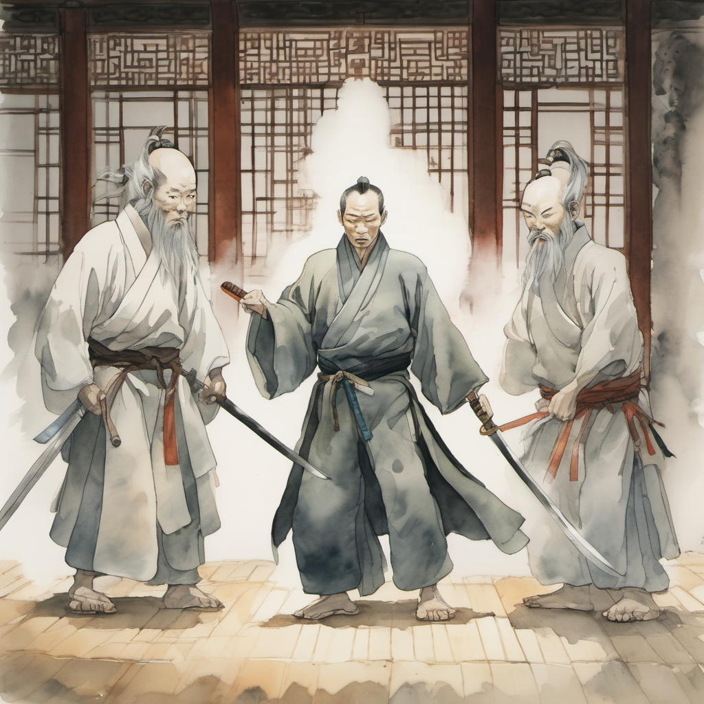
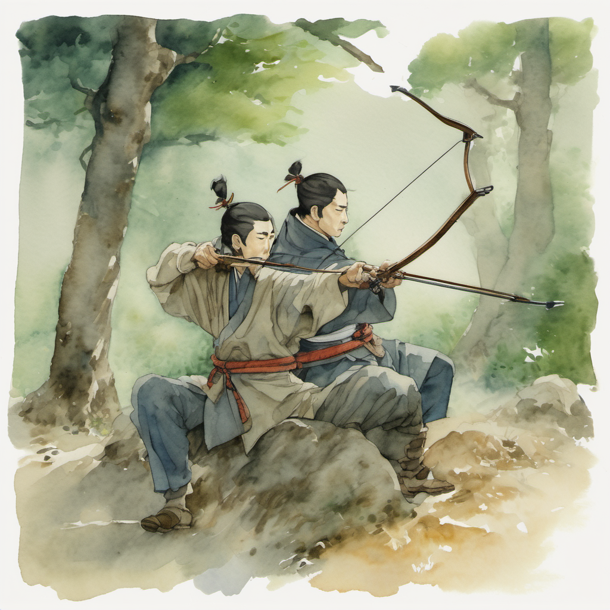
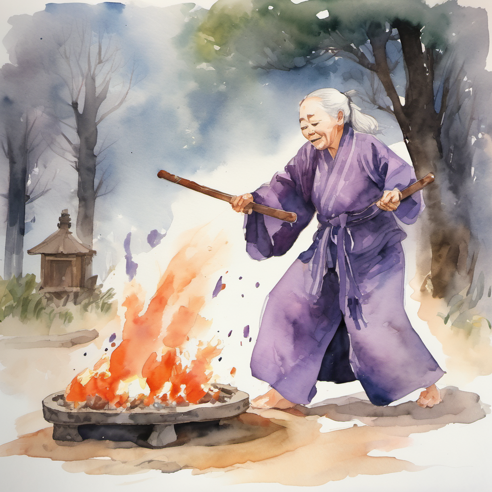
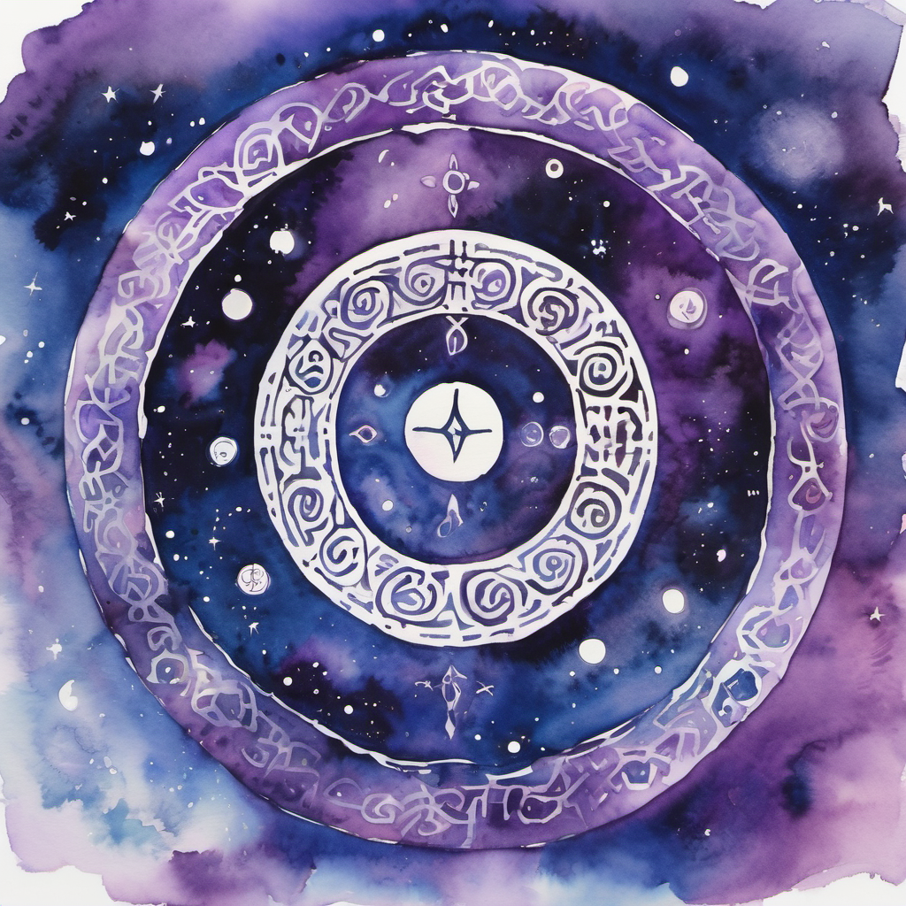
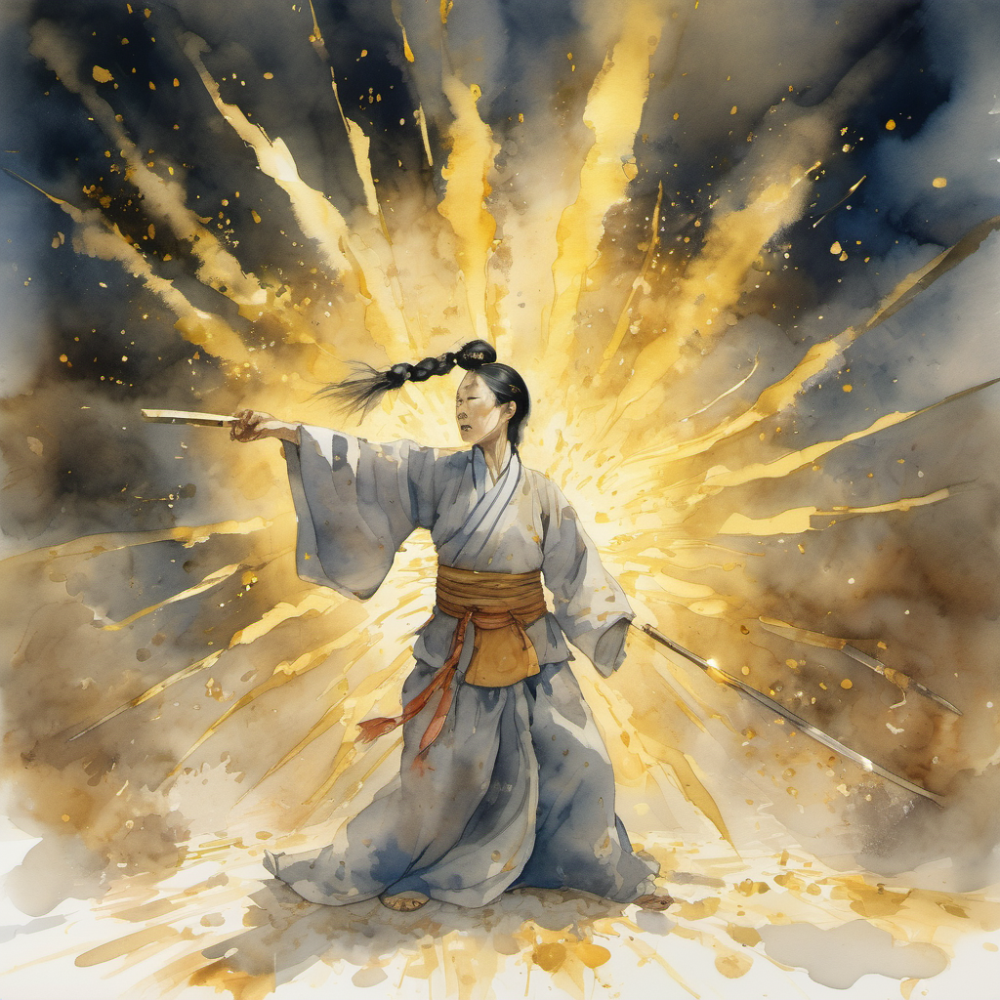
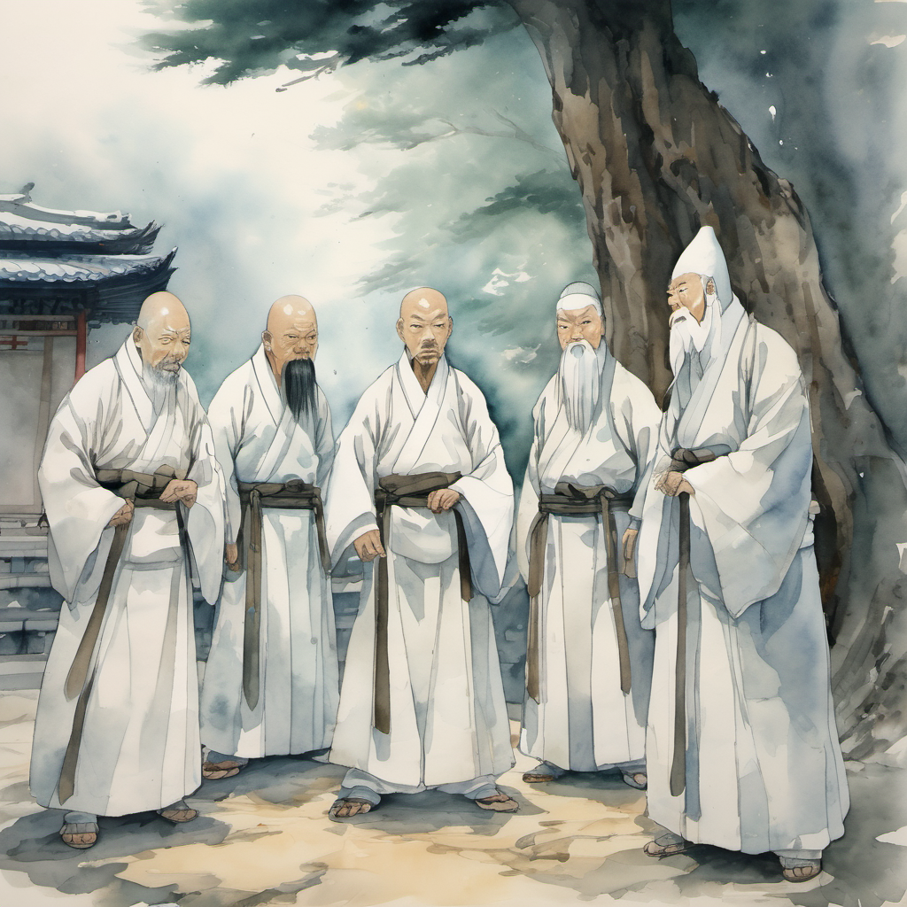
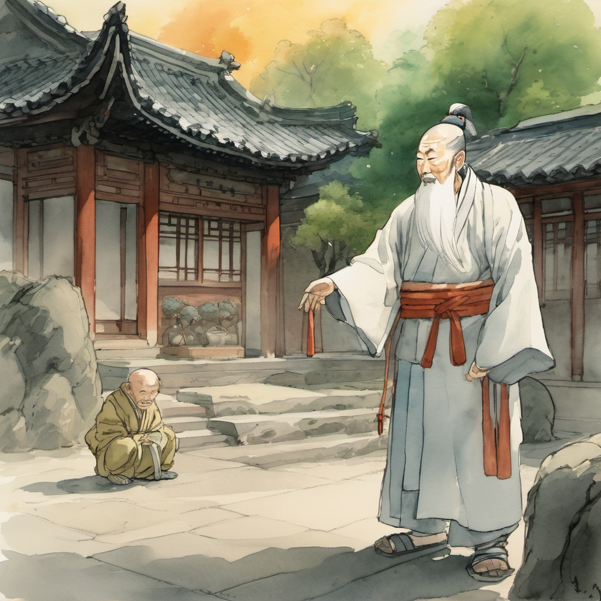
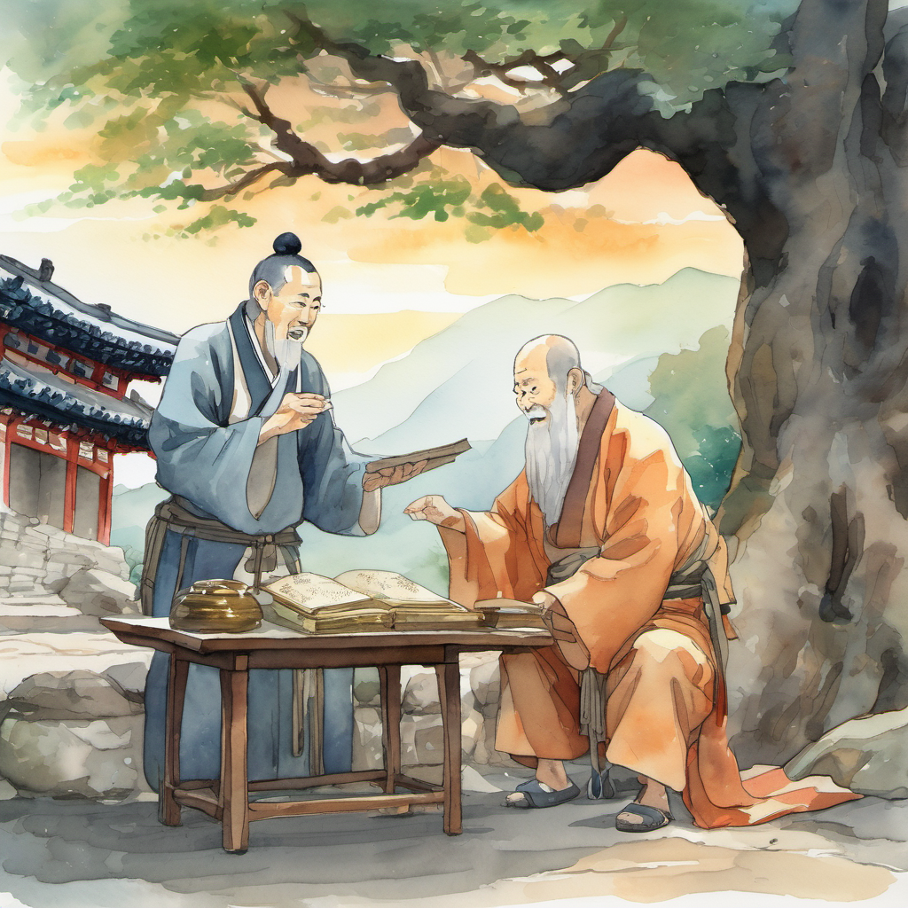

태극검 4박자 강제 정렬

4개의 검이 4개의 박자를 동시에 보냈는데 그 4개 박자가 — 정확히 — 같은 박자였다. 정주의 들쭉날쭉 박자가 — 그 4박자에 — 강제로 — 끌려갔다.
정주의 무릎이 — 한 번 — 균형 — 으로 — 정렬되었다. 이것은 50대 노동자의 무릎에는 — 견딜 수 없는 — 충격이었다. 무릎의 시큰함이 — 한 번 — 사라졌다. 시큰함이 사라진 것은 — 좋은 일 — 같지만 — 정주에게는 — 아니었다. 무릎의 시큰함은 — 정주의 박자의 — 본 맥 — 이었다.
그러나 그 말의 박자조차 — 한 번 — 균형으로 — 정렬되었다. "...야" "이" "친" "구" "들" 모든 글자가 — 정확히 — 같은 시간 간격으로 — 떨어졌다. 이것은 정주의 톤 — 이 — 아니었다.
이방원도 정렬

월자의 작두 봉인 — 1981 부산

정주가 — 자기 어머니의 작두 박자를 — 떠올렸다. 1981년 부산 오륙도의 — 그 — 작두 박자. 정주가 7살 때 — 어머니가 — 그 박자로 — 봉인을 — 만들었다. 그 봉인이 — 49년 — 한계까지 — 지켜졌다.
위로 — 한 박. 아래로 — 반 박. 위로 — 한 박 반. 아래로 — 반 박. 균형이 아니라 — 들쭉날쭉.
봉인 > 균형

49년 전에 — 어머니가 — 봉인을 — 만들 때 — 작두 박자가 — 한 번 — 우주에 — 새겨졌다. 그 박자는 — 무당파의 태극검 4박자보다 — 한 단계 — 위 — 의 — 박자였다.
김용 풍으로 옮기면 — "장삼봉의 태극권은 — 우주의 균형을 — 잡지만 — 어머니의 작두 박자는 — 우주의 — 봉인을 — 만든다." 봉인이 — 균형보다 — 한 단계 — 위.
정주의 박자가 — 한 번 — 들쭉날쭉으로 — 돌아왔다. 태극검 진형의 4박자가 — 한 번 — 흔들렸다.
슬레이어 살풀이 — 황금빛 폭발

슬레이어가 — 작두를 — 한 번 — 흔들었다. 빙의 직후 — 5초간 — 메즈 면역. 월자가 — 빙의 직후 — 작두를 — 머리 위로 — 들어 — 올렸다.
박세린 GDD slayer 노드 A 1단계 — "황금빛 폭발 — 3m 광역 — +20% 데미지." 그러나 본 화에서는 — 데미지 버프가 아니라 — 박자 회복 — 으로 — 작동했다. 슬레이어 = 살풀이 무당. 살풀이 = 한국 무속의 — 박자 회복 — 의식.
태극검 진형 정지 — 무당파 첫 패배

태극검 진형의 4박자가 — 한 번 — 정지 — 되었다. 4개 검이 — 동시에 — 같은 박자로 — 검결을 — 외우다 — 한 번 — 박자를 — 잃었다.
이것은 무당파 태극검의 — 첫 — 패배 — 였다. 김용 풍 의천도룡기의 — 태극검이 — 명교의 건곤대나이에 — 한 번 — 밀렸던 — 그 — 본맥의 변형판.
도성 — 두 번째 판단 수정

「태극검결」 비급 전수

도성이 — 자기 도복 안에서 — 한 권의 — 책을 — 꺼냈다. 한지로 만든 책. 표지에는 — 「태극검결(太極劍訣)」 이라 — 한자로 — 적혀 있었다.
정주가 그 책을 — 받았다. 책의 무게는 — 가벼웠다. 그러나 그 안의 박자는 — 무당파 — 5,000년의 — 박자.
(2권 7화 끝)